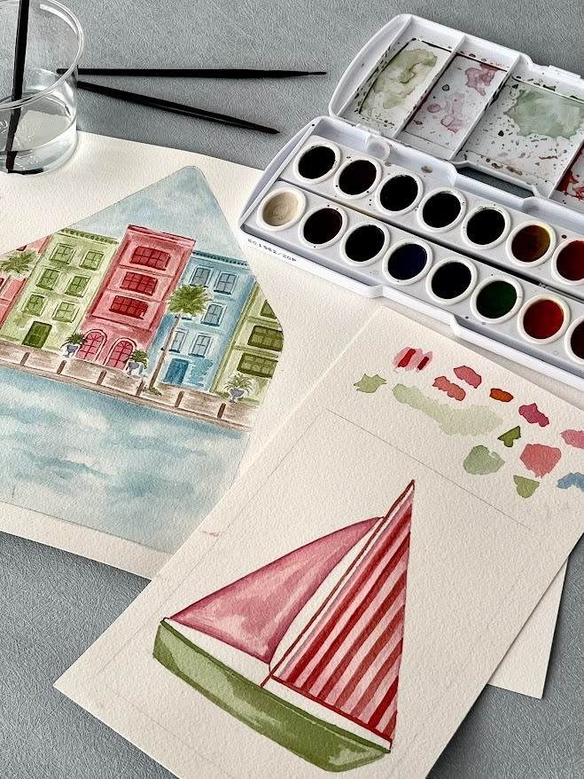
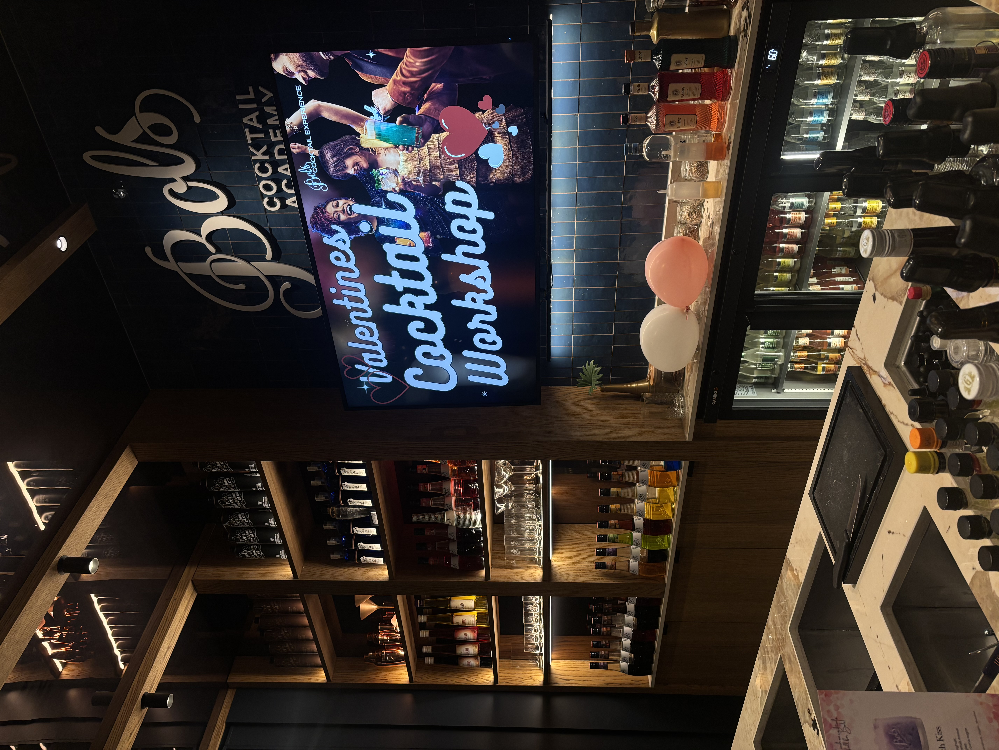
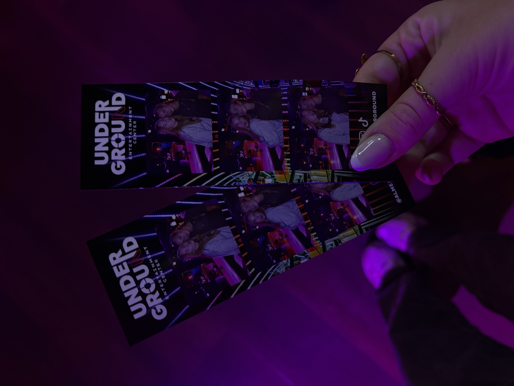
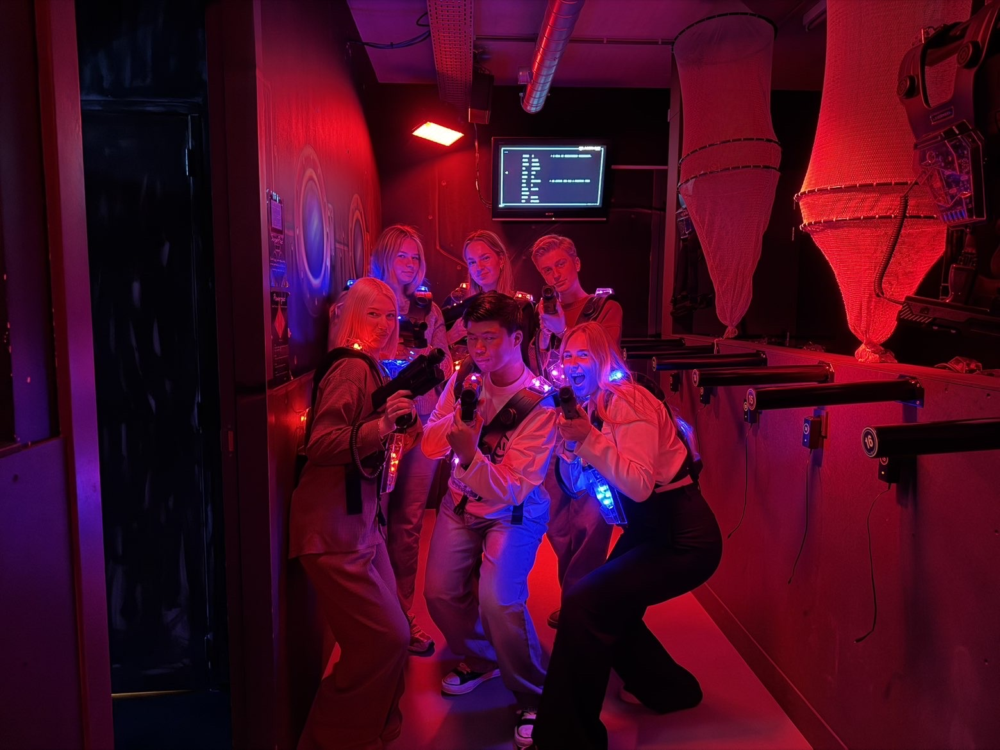

Hi,
Welkom bij de Digital Guide!
Dit zijn mijn favoriete activiteiten die ik jullie aanraadt:
-
-

Bols cocktailworkshop
https://www.bols.nl -

Almere underground
https://www.almereunderground.nl -

Lasergamen
https://www.kartfabrique.nl